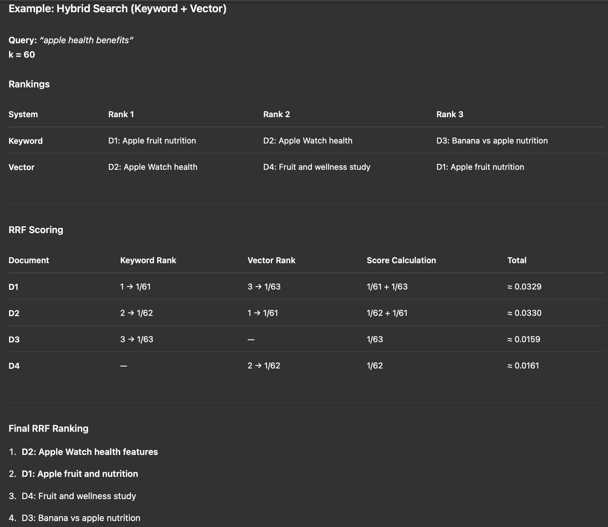
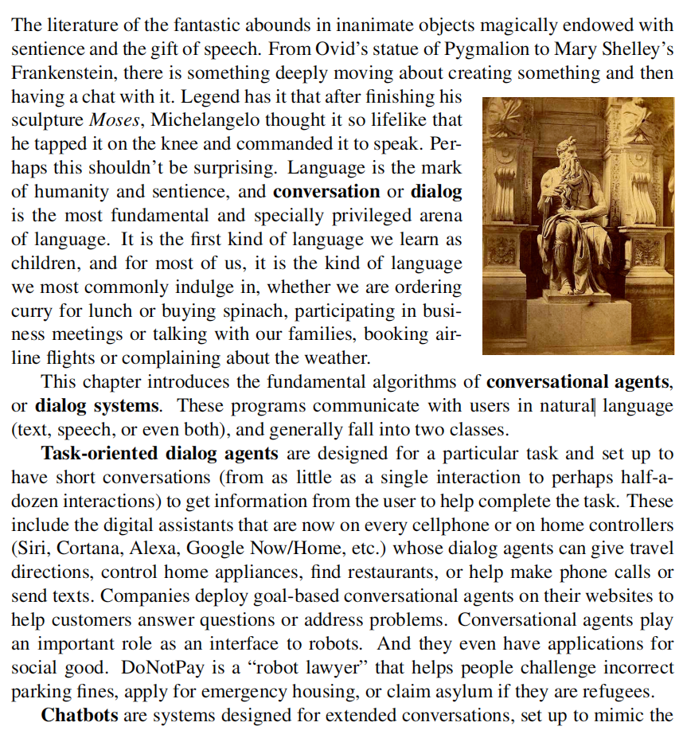

Retrieval-Augmented Generation (RAG) System
Architecture, Implementation, Deployment and Optimization
Why Use RAG: Problems and Solutions
Core Challenges in Large Language Models
- Knowledge Cutoff: LLMs are frozen at training time, lacking access to recent information
- Hallucination: Models generate plausible but factually incorrect information
- Domain Specificity: General models lack specialized domain knowledge
- Source Attribution: Difficulty in tracing information back to authoritative sources
RAG as a Solution
Retrieval-Augmented Generation addresses these limitations by:
- Dynamically retrieving relevant information from external knowledge bases
- Grounding responses in verifiable source documents
- Enabling real-time knowledge updates without model retraining
- Reducing computational costs compared to fine-tuning approaches
Key Advantage: RAG combines the generative capabilities of LLMs with the precision of information retrieval systems, creating a more reliable and adaptable AI system.
Basic RAG Architecture
System Components
Key Components
- Document Store: Elasticsearch for efficient vector storage and retrieval
- Embedding Model: Transforms text into high-dimensional vectors
- Generator: LLM that produces responses based on retrieved context
Embedding Model Explained
What is an Embedding Model?
An embedding model transforms text (words, sentences, or documents) into high-dimensional numerical vectors. These vectors capture the semantic meaning of the text, enabling efficient similarity comparison and retrieval.
Why Are Embeddings Important in RAG?
- Enable semantic search by representing similar concepts with nearby vectors
- Allow the retrieval system to find contextually relevant documents, not just keyword matches
- Serve as the bridge between unstructured text and structured vector databases (like Elasticsearch)
Common Embedding Models
- BERT and its variants (e.g., Sentence-BERT, MiniLM)
- OpenAI Embeddings (e.g., text-embedding-ada-002)
- Multilingual Models for cross-language retrieval
Example: Semantic Similarity in Vector Space
In the embedding space, semantically similar words (like cat, dog, wolf) are mapped close together, while unrelated concepts (like apple and banana) form their own clusters elsewhere.
Cosine Similarity Explained
Cosine similarity measures the angle between two vectors in high-dimensional space. In the context of embeddings, it quantifies how similar two pieces of text are, regardless of their magnitude. A cosine similarity of 1 means the vectors are identical in direction (highly similar), while 0 means they are orthogonal (unrelated).
Elasticsearch Vector Database Configuration
Local Development Environment Setup
Elasticsearch provides powerful vector search capabilities essential for RAG systems.
Quick Installation Method
curl -fsSL https://elastic.co/start-local | sh
Get Elasticsearch Password and API Key
cat elastic-start-local/.env | grep ES_LOCAL_PASSWORD
cat elastic-start-local/.env | grep ES_LOCAL_API_KEY
Use the above commands to extract your Elasticsearch password and API key from the .env file generated by the quickstart script. These credentials are required for secure access to your local Elasticsearch instance.
Configuration Steps
- Execute the one-liner command to deploy Elasticsearch locally
- Default configuration includes:
- Port 9200 for REST API
- Port 9300 for node communication
- Built-in security features enabled
List All Indices
http://localhost:9200/_cat/indices
Check Content of Index
curl -u elastic:<your_password> "http://localhost:9200/test/_search?pretty"
This command queries all documents in the test index. Replace <your_password> with your actual Elasticsearch password.
Reference: https://www.elastic.co/docs/deploy-manage/deploy/self-managed/local-development-installation-quickstart
PDF Text Processing
Chunking Strategies
Effective chunking is crucial for RAG systems. Different strategies work better for different types of content and use cases.
Retrieve and Rerank
Hybrid Search
- Combine dense (vector) and sparse (BM25) retrieval to balance recall and precision
- Use vectors for semantic coverage; use BM25 for exact keyword/phrase matches
What Does Hybrid Search Solve?
Hybrid search addresses the limitations of using only keyword (sparse) or only vector (dense) retrieval in information retrieval systems:
-
Keyword search (e.g., BM25) is excellent for exact matches and precise phrase queries, but struggles with synonyms, paraphrases, and semantic similarity.
-
Vector search (dense retrieval) captures semantic meaning and can find relevant results even when the query and document use different words, but may miss exact matches or rare keywords.
Hybrid search combines both approaches, leveraging the strengths of each:
-
Keyword search ensures that highly relevant, exact matches are not missed.
-
Vector search brings in semantically similar results that keyword search alone would overlook.
-
By combining and re-ranking results from both, hybrid search improves both recall (finding more relevant items) and precision (ranking the best items higher).
In practice, hybrid search is especially valuable for open-domain question answering, document retrieval, and RAG (Retrieval-Augmented Generation) systems, where both exact and semantic matches are important for high-quality results.
Reranker
After retrieving documents using hybrid search, reranking further improves result quality by reordering documents based on their relevance to the query. There are two main approaches:
1. Reciprocal Rank Fusion (RRF)
RRF is an algorithmic approach that combines rankings from multiple retrieval methods (keyword and vector search) using a mathematical formula:
RRF_score = Σ(1 / (k + rank_i))
- Advantages: Fast, no additional model inference required, works well for combining different retrieval methods
- Use case: When you need efficient ranking without additional computational overhead

Example of Reciprocal Rank Fusion combining keyword and vector search results
2. Neural Reranker Models
Neural rerankers use transformer-based models to score query-document pairs based on semantic relevance:
- Model Example: Qwen3-Reranker-4B - A state-of-the-art reranking model
- Advantages: Higher accuracy, better semantic understanding, can capture complex query-document relationships
- Trade-offs: Higher computational cost, increased latency
- Use case: When maximum relevance accuracy is critical and computational resources allow
RAG Fusion: Advanced Multi-Query Retrieval
What is RAG Fusion?
RAG Fusion is an advanced retrieval technique that generates multiple query variations from a single user question, retrieves documents for each variation, and then fuses the results to provide more comprehensive and accurate information.
Why RAG Fusion?
Problem with Single Query RAG: A single query might miss relevant documents due to:
- Different terminology or phrasing in documents
- Synonyms and alternative expressions
- Context-dependent language variations
- Domain-specific vocabulary
RAG Fusion Process
Step-by-Step Process
- Query Generation: Use an LLM to generate multiple query variations from the original question
- Parallel Retrieval: Retrieve documents for each query variation using vector search
- Result Fusion: Combine and deduplicate results using Reciprocal Rank Fusion (RRF)
- Context Generation: Use the fused results to generate the final response
Key Benefits
- Improved Recall: Captures more relevant documents through query diversity
- Better Coverage: Addresses different ways the same information might be expressed
- Reduced Bias: Less dependent on specific query phrasing
- Enhanced Accuracy: More comprehensive context leads to better responses
Coreference Resolution for Multi‑Turn Conversations
Why It's Needed
- Pronouns and references: Users say "it", "that", "he/she", or "the law" without restating entities.
- Ellipsis and follow‑ups: Later turns omit details assumed from prior context ("and what about section 2?").
- Entity continuity: Keep track of which document, section, or party is being discussed across turns.
- Grounding for RAG: Accurate resolution improves retrieval queries and reduces hallucinations.
Problems It Solves
- Ambiguity: Disambiguates who/what pronouns refer to in the conversation history.
- Context drift: Prevents switching to the wrong entity when multiple are in scope.
- Under‑specified queries: Expands follow‑ups into explicit, retrievable queries.
- Answer faithfulness: Ensures responses cite the intended source passages.
How It Works in RAG
- Track dialogue state: Maintain entities (documents, sections, people) mentioned so far with IDs/metadata.
- Resolve references: Replace pronouns/ellipsis in the new user turn with their most likely antecedents.
- Form explicit query: Generate an expanded query that includes resolved entities and constraints.
- Retrieve and answer: Use the explicit query for retrieval; generate grounded answers with citations.
Takeaway: Coreference resolution turns vague follow‑ups into precise retrieval queries, boosting recall, precision, and answer correctness in multi‑turn RAG.
Query Decomposition
Why It's Important
Many real‑world queries are composite and contain multiple distinct constraints. Decomposing a complex query into atomic sub‑queries improves retrieval coverage, reduces ambiguity, and enables modular reasoning and aggregation.
What It Solves
- Recall gaps: Single queries can miss documents; sub‑queries widen coverage.
- Ambiguity: Makes implicit criteria explicit and testable.
- Ranking noise: Filter‑then‑rank on sub‑results yields cleaner final sets.
- Compositional reasoning: Supports stepwise filtering, intersections, and trade‑off analysis.
Example: Composite Query
Original query: “Find environmentally friendly electric cars with over 300 miles of range under $40,000.”
- Cars that are electric
- Cars that are environmentally friendly
- Cars with > 300 miles range
- Cars priced < $40,000
Decomposition → Retrieval Plan
- Generate sub‑queries:
- Q1: electric cars
- Q2: environmentally friendly certifications/ratings
- Q3: cars with range > 300 miles
- Q4: cars priced < $40,000
- Retrieve per sub‑query (dense + sparse where helpful).
- Intersect/score candidates that satisfy all constraints.
- Summarize final set with evidence and trade‑offs.
Metadata Filtering in RAG
Why Use Metadata Filters?
- Higher precision: Restrict retrieval to the right subset (e.g., law, year, jurisdiction).
- Lower latency & cost: Search fewer candidates; reduce context length.
- Policy & safety: Enforce access control, content type, and language constraints.
- Reduce noise: If the user asks about a specific document, use metadata (e.g.,
file_name/title/doc_id, page) to filter out irrelevant documents so they are not retrieved.
What It Solves
- Targeted queries: For example, “Summarize the content on page 5 of Book1.” Use filters like
title = "Book1" AND page = 5 to fetch the exact chunk.
Common Metadata Fields
- file_name
- page
- author
- doc_type
- title
- section
- language
- created_at / updated_at / version
Pipeline Integration
- Document processing: Extract metadata (title, page, section, doc_type, language, dates) per chunk and store alongside embeddings in Elasticsearch.
- LLM parameterization: Let the LLM parse the user request to pick index, filters, and fields for Elasticsearch retrieval.
- Retrieve → rerank: Apply filters during kNN/BM25, then rerank with RRF or a neural reranker.
User: Summarize page 5 of Book1
LLM → filters: { "title": "Book1", "page": 5 }
ES kNN: {
"field": "embedding",
"k": 20,
"num_candidates": 400,
"filter": {
"bool": { "must": [
{ "term": { "title": "Book1" } },
{ "term": { "page": 5 } }
]}
}
}
Elasticsearch Examples
Vector kNN with filter
{
"field": "embedding",
"query_vector": [/* ... query embedding ... */],
"k": 50,
"num_candidates": 1000,
"filter": {
"bool": {
"must": [
{ "term": { "doc_type": "law" } },
{ "term": { "language": "zh" } },
{ "range": { "year": { "gte": 2018 } } }
]
}
}
}
Hybrid (BM25 + vector) with shared filters
{
"query": {
"bool": {
"must": { "multi_match": { "query": "sentencing standards for voluntary surrender", "fields": ["text", "title^2"], "type": "best_fields" } },
"filter": [
{ "term": { "jurisdiction": "CN" } },
{ "term": { "doc_type": "criminal_procedure" } }
]
}
},
"knn": {
"field": "embedding",
"query_vector": [/* ... */],
"k": 50,
"num_candidates": 1000,
"filter": { "term": { "jurisdiction": "CN" } }
}
}
Best Practices
- Index design: Map filter fields as keyword/date/numeric; avoid analyzed text.
- Pre-filter, then rerank: Apply filters before retrieval; use RRF or neural rerankers after.
- Strict vs soft: Encode hard constraints as filters; soft preferences as scores.
- Log & eval: Track filter hit-rates and false negatives.
Web Search as Retrieval‑Augmented Generation
Why Web Search ≈ Retrieval
Calling a web search API to gather information online is itself a form of retrieval. The search results (pages, snippets, metadata) act as the external knowledge base that grounds the LLM’s answer.
How It Fits Into RAG
- Formulate query: Turn the user request into a precise search query (or multiple queries).
- Retrieve: Call web search APIs (e.g., Google, Bing, Tavily, Exa) to fetch top results.
- Extract: Fetch pages, strip boilerplate, and collect key passages with URLs and timestamps.
- Ground and generate: Provide the extracted snippets to the LLM to produce a cited, up‑to‑date answer.
Why It’s Important
- Freshness: Accesses the latest information beyond the model’s training cutoff.
- Coverage: Reaches sources not present in your private corpus or vector store.
- Attribution: Produces answers with live URLs for verification and trust.
- Breadth → Depth: Web results seed deeper retrieval into specific sites or documents.
Problems It Solves
- Outdated knowledge: Bridges gaps caused by model cutoff or stale indices.
- Long‑tail queries: Handles niche or emerging topics without prior embeddings.
- Source discovery: Finds authoritative sources to ingest into your RAG pipeline.
- Verification: Enables cross‑checking facts across multiple independent sources.
Image and Table Retrieval
Image Retrieval Pipeline
- Extract images: Parse documents (PDF/HTML) and export embedded images with page and figure metadata.
- Describe images (multimodal): Use a multimodal model to generate concise, factual captions and keywords.
- Context augmentation: Enrich the caption using nearby context (figure captions, surrounding paragraphs, section headers, document metadata) to produce a context‑aware description.
- Index descriptions: Store captions and tags in Elasticsearch with image URLs/bytes and metadata for retrieval.
- Retrieve and ground: At query time, search textual descriptions to surface relevant images with citations.
Example: A raw multimodal caption might be “portrait of a man.” With context augmentation (book title, chapter, caption), it becomes “portrait of [person name] from [book], Chapter 3,” leading to more accurate and relevant retrieval.

Table Retrieval Pipeline
- Extract tables: Detect and export tables from PDFs/HTML; normalize cell contents.
- Convert to Markdown: Represent table structure in Markdown to keep headers, rows, and relations.
- Context augmentation: Fuse surrounding headings, paragraph context, units/footnotes, and timeframe/source notes to create a context‑aware table description.
- Summarize with LLM: Create a text description capturing schema, key metrics, and trends.
- Index summaries: Store Markdown + summary in Elasticsearch with source metadata.
Why It Matters
- Broader coverage: Brings non‑textual evidence (figures, charts, tables) into RAG.
- Better answers: Enables citing visual evidence and numeric facts, not just prose.
- Structured retrieval: Table Markdown and summaries are highly retrievable and quotable.
The Power of Context Augmentation: Context is fundamental to understanding in NLP and AI systems. Raw content (like "portrait of a man" or a standalone table) lacks the semantic richness needed for accurate retrieval. Context augmentation transforms isolated data into meaningful, searchable content by incorporating surrounding information—document titles, section headers, captions, and metadata. This mirrors how humans understand information: we don't process text or images in isolation, but within their broader context. In RAG systems, context-aware descriptions dramatically improve retrieval precision, reduce ambiguity, and enable more relevant, trustworthy responses by preserving the original semantic relationships and provenance.
Homework
Assignment
Build your own RAG system that can process any PDF document, including extracting and handling text, images, and tables in the file.
Minimum Requirements
- Deploy Elasticsearch locally.
- PDF ingestion: extract text, images, and tables.
- Chunking: split text and table content into retrievable units; caption images with concise descriptions.
- Embeddings: generate vectors for text, table summaries, and image captions.
- Indexing: store content + embeddings in Elasticsearch.
- Retrieval: support hybrid search (BM25 + vector).
- Reranking: apply RRF or a neural reranker for final ordering.
- Answering: generate responses grounded in retrieved content with citations.
Stretch Goals (Optional)
- RAG Fusion: multi‑query generation and fusion.
- Coreference resolution for multi‑turn questions.
- Evaluation: track precision/recall and latency; add guardrails for safety.